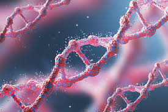

More About My Interests
My interest in the intersection of Data Science and Biology is deeply rooted in my passion for understanding cancer and rare variant diseases. As a combined Data Science and Biology student at Northeastern University, I am particularly fascinated by how data-driven approaches can be used to uncover the genetic underpinnings of these complex conditions and, ultimately, improve patient outcomes.
In oncology, I am driven by the challenge of identifying genetic mutations and alterations that drive cancer progression. By applying bioinformatics tools to analyze large-scale genomic data, such as whole genome sequencing or transcriptomics, we can uncover novel cancer-associated genes and pathways. These discoveries could lead to the development of targeted therapies that are more effective and have fewer side effects than traditional treatments, offering new hope for patients with hard-to-treat cancers.
I am also passionate about rare variant diseases, where the genetic causes are often elusive and poorly understood. By leveraging advanced data science techniques to analyze rare variants in patient genomes, we can uncover genetic mutations that contribute to these rare diseases. This knowledge can lead to better diagnostic tools, more accurate genetic counseling, and even potential therapeutic interventions for these underserved conditions.
Ultimately, I am excited about the potential of combining genomics and data science to uncover new insights in cancer and rare diseases, with the goal of improving diagnostics, treatments, and patient care.

- Bioinformatics is the application of computer science and data analysis techniques to understand biological data, particularly large datasets such as DNA sequences.
- Genomics is the study of the genome, the complete set of genetic material in an organism, including its structure, function, evolution, and mapping.
- Next-Generation Sequencing (NGS) technologies are used to rapidly sequence DNA, enabling large-scale genomic studies.
- Genomic data analysis helps identify genetic variants associated with diseases, including cancer and rare genetic disorders.
- Gene expression profiling allows researchers to measure the activity of genes under different conditions, helping to understand disease mechanisms.
- Bioinformatics tools are essential for analyzing genomic data, including alignment algorithms, sequence assembly tools, and gene annotation systems.
- Genomic databases such as GenBank and ENCODE store vast amounts of sequence and functional genomic information, which are critical for bioinformatic analyses.
- Cancer genomics focuses on identifying genetic mutations and alterations that contribute to cancer development and progression.
- Rare variant analysis aims to identify uncommon genetic mutations linked to rare diseases, which often go undetected with traditional methods.
- Computational models in bioinformatics are used to predict how genetic mutations affect protein function and disease outcomes.
- Personalized medicine is an emerging field that tailors medical treatments based on an individual’s genetic profile, made possible by advancements in bioinformatics and genomics.